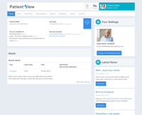

Patients
-

Your health records at your fingertips
PatientView transforms the levels of visibility and control you have over your personal health records. Test results delivered automatically from your unit, receive letters and scans electronically, keep track of all your medications, receive alerts, and much more, many within 24 hours of an appointment.
-
Mobile-friendly, simple to use and share
PatientView has been built for mobility and ease of use. The menu is crisp and clean and you can access your records at any point, from any location and on any mobile device. Share your records with whoever you wish, including family members, your GP or other health care professionals.
-
Enter your own results & monitor your scores
In addition to the data received automatically from your unit, you can keep track of readings relevant to your condition. When captured these immediately form part of your secure online patient record. Some patients may also complete symptom scorers and other measures, all of which add to the richness of data and assist clinical teams with overall care.
-
Send and receive messages
PatientView has secure messaging functionality, meaning that you have the ability to send messages directly to specific staff in your unit. You can even set yourself up to receive notifications once new results or letters arrive, so you don’t have to keep logging in.